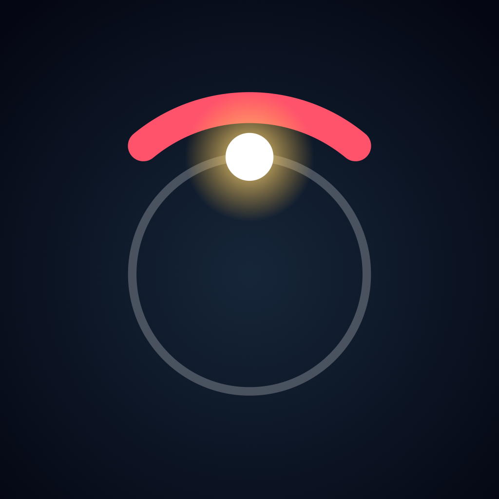
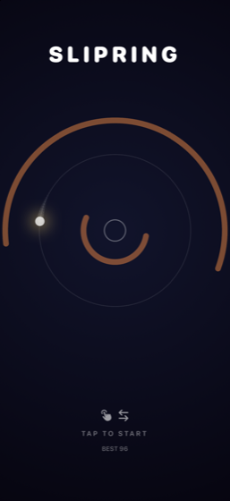
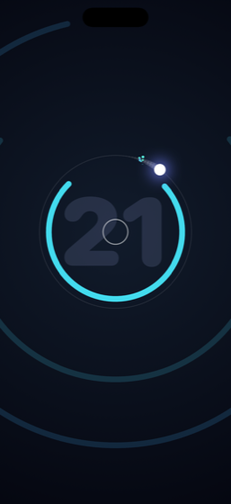
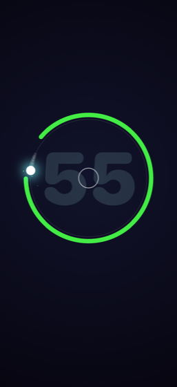
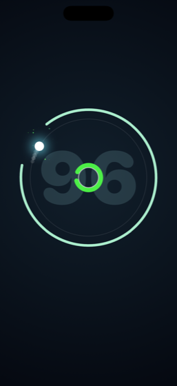
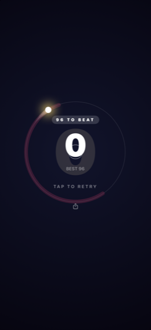

One tap. One dot. One ring.
Coming to the App StoreA dot runs a ring. Tap to send it the other way. Arcs close in from the dark, each with a single gap. Be in the gap.
That is the whole game and you will have it in three seconds. What takes longer is the ring.





The gap narrows and the arcs quicken, but a curve alone gets dull. So arcs take on behaviours as you go. Each one turns up on its own, gently the first few times, then in earnest.
| from 5 | Drifting — the gap slides while you aim at it, so aiming where it is misses. |
| from 11 | Twin — two arcs back to back, gaps on opposite sides. A committed there-and-back. |
| from 18 | Fast — arrives before you have finished thinking. Thin and pale, so you know early. |
| from 40 | Combined — twins that drift, fast arcs that drift. New shapes, no new rules. |
No gap is ever placed where you could not have reached it. Where the next gap can appear is computed from how fast you can cross the ring, minus the worst case drift and the time a person needs to react. Every death is one you can point at.
Something broken, or an idea? Write to slipring.support@gmail.com, or open an issue if you would rather it were public. Replies usually come within a couple of days.